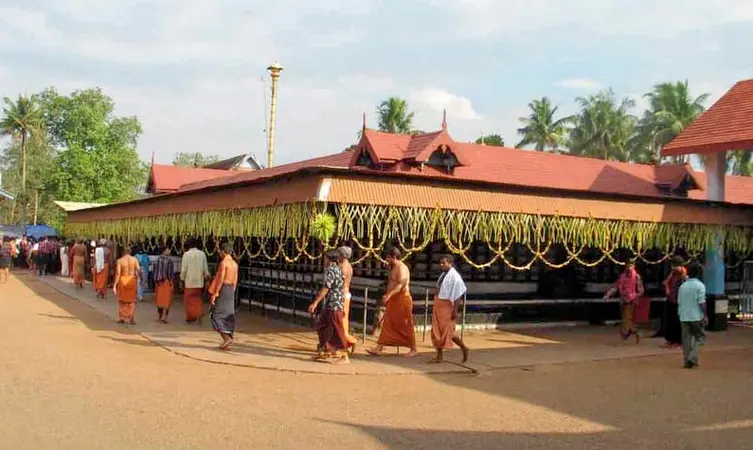

1.chottanikkara temple
This is the most visited and highly revered Hindu temple down south. The temple is believed to be 1500 year old where the goddess Chottanikkara Bhagavathy Amman and the Keezhu Kaavu Bhadrakali Amman are worshipped as healing goddesses. A continuous practice of worshipping the deities in this temple is believed to cure life-threatening diseases.
The temple premises houses a Pala tree which is pierced with thousands of nails, the reason being patrons who are cured of mental maladies drive a nail across the tree. Men are required to open their shirts before they enter the premises, while women are requested to be dressed in Indian attire to offer reverence.
LOCATION: Chottanikkara, Ernakulam ( 20 km from Ernakulam )
TIMIMGS: 4.00 am to 8.45 pm everyday.
ENTRY FEES: None
 2.Andhakaranazhi beach
2.Andhakaranazhi beach
This beach drawing several tourists is located in a coastal village, located 4km of Pattanakkad. The tall lighthouse in white and red grabs attention as it helps navigate the seamen at night. The Andhakaranazhi Beach happens to be a site for frequent shooting for Malayalam films, thus drawing more attention from the locals.
Though seriously affected by the Tsunami in 2004, a brand new bridge and an aerial walkway have been constructed to the sea wall for a magnificent view of a dramatic sunset to cherish for a lifetime.
LOCATION: 4 km west of Pattanakkad under Cherthala Taluk.
TIMIMGS: Sunrise to Sunset.
ENTRY FEES: none
 3.Athirapally falls
3.Athirapally falls
At a height of 80m, this is the largest waterfall of Kerala and is often regarded as the“ Niagra of India”. The Athirapally Falls is a charming cascade of frothy waters emerging from the Anamudi mountains of the western ghats.
The Athirapally gushes across the lush green forest of Vazhachal towards the Arabian sea creating an exquisite panoramic spectacle. On the way to Athirapally, one may also visit the theme parks Dreamworld and Silver storm and decide to stay over at the many resorts strategically located amidst the greenery
LOCATION: Athirappilly, Chalakudy Taluk, Thrissur.
TIMIMGS: 8.00 am to 6.00 pm everyday.
ENTRY FEES: Rs. 15/- per person.
 4.Mattancherry temple
4.Mattancherry temple
This Portuguese palace, also known as the Dutch Palace is one of the prime places to visit in Kochi due to its historic relevance. This quadrangular palace built in typical Kerala Nalukettu style has a courtyard in the centre where is seated the Pazhayannur Bhagavati' the goddess of Kochi royal family.
The flooring of the palace is a sight to behold, as because it looks like polished black marble, but has been made the traditional Kerala way using burnt coconut shells, lime, charcoal, egg white etc giving a lasting finish. The reputation of the Palace is in the various murals painted in warm and rich colours the tempura style.
LOCATION: Mattancherry, Kochi.
TIMINGS:Sunday to Friday 9.45 am to 1.00 pm and 2.00 pm to 4.45 pm, Saturday closed
ENTRY FEES: Rs. 2.00/- per adult and free entry for children below 15 years.